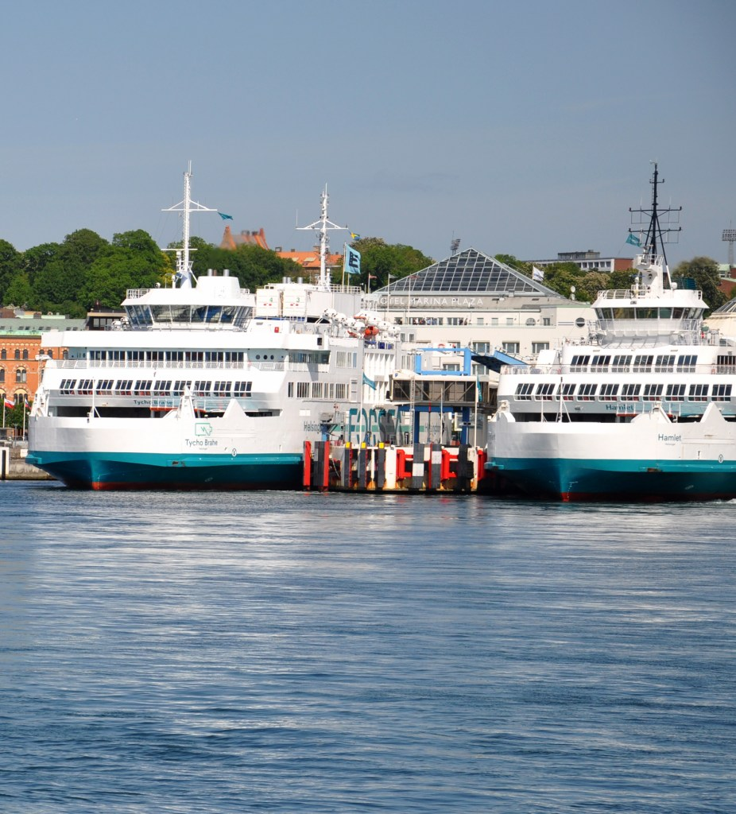

A fruit transport giant, ferry master, and container specialist
The Port of Helsingborg is a multifaceted hub that offers exceptional opportunities for efficient train,
road, and sea transports throughout the entire logistics chain. Though we’re the largest port for fruit transports
in the Nordic,as well as a master of ferry traffic, we’re probably most well-known as a container specialist –
and for many years, this is our main focus.
Our segments in sea services
Container Traffic
When transporting goods between continents worldwide, loading containers on cargo ships is the most efficient way.
Containers arriving at or departing from the Port of Helsingborg normally come from a transoceanic port of transshipment,
such as Hamburg, Rotterdam, or Antwerpen goods are transhipped to smaller feeder vessels.
Every week some 15 ships from around ten companies call to the Port of Helsingborg as part of their scheduled routes.
The heavy traffic is beneficial for the import and export industry and the transport business in our entire region.
Traffic Bulk
Bulk is basically anything that is transported in large quantities without packaging or packing, like grains, oil, or pellets.
In the Port of Helsingborg, we have long experience in handling for example large volumes of pellets for Öresundskraft
(local energy supplier). While volumes of mineral oils are handled by our customers in the Energy Terminal, grain volumes
are handled in the Grains Terminal by Lantmännen.

Ferry and Cruise Traffic
The ferries between Helsingborg and Helsingør work as a bridge for passengers, cargo trucks, and cars. To ”tura”
(catching the ferry back and forth several times in a row while enjoying good food and drinks) is a well-known leisure activity
in Helsingborg and very popular among tourists. The ferry traffic between Helsingborg and Helsingor continues to be one of the
port’s busiest areas. While the main operator is ForSea with five ferries, passengers can also take the M/S Pernille operated
by Sundbusserne.
Container Specialist
The Port of Helsingborg is the second-largest container port in Sweden and one of the leading ports in northern Europe.
Every year we handle around 275,000 TEU* from shipping, and 75,000 TEU* from land transports.
With efficient transport solutions by railway, road, and sea, day and night all year round,
the Port of Helsingborg provides unique infrastructural opportunities for shipping companies, conveyors, and forwarding agents..